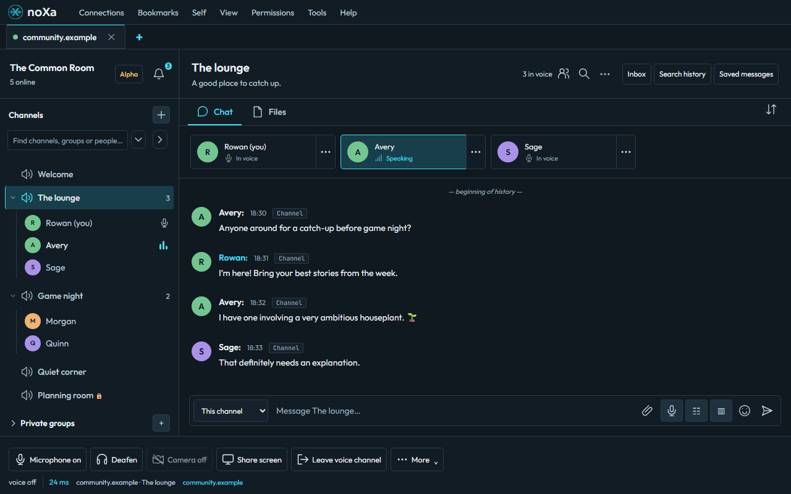
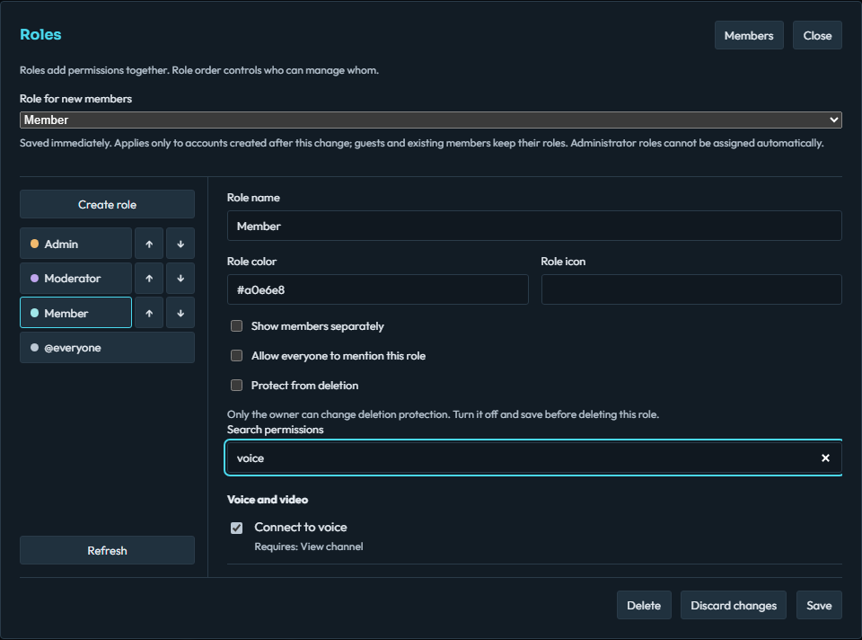

Drop into voice.
Find your people in a voice channel. Talk, turn on your camera, and spend a little time together.
Self-hosted. Shared with your people.
Voice, video, and chat for the people who make your day. Meet them in a space you control.
Windows x64 · Public alpha · Latest release on GitHub

Voice, video, and chat in one desktop app. A self-hosted space for your community.
Find your people in a voice channel. Talk, turn on your camera, and spend a little time together.
Share a screen or a window to bring everyone into the same conversation. Capture options depend on your system.
End-to-end encrypted direct messages for your one-to-one conversations.

Make it your own
Organize your channels, set up named roles, and decide who has access. Host the noXa server on infrastructure you choose.
Explore server setupGet the noXa desktop client and connect to your community.
Public alpha · Windows x64